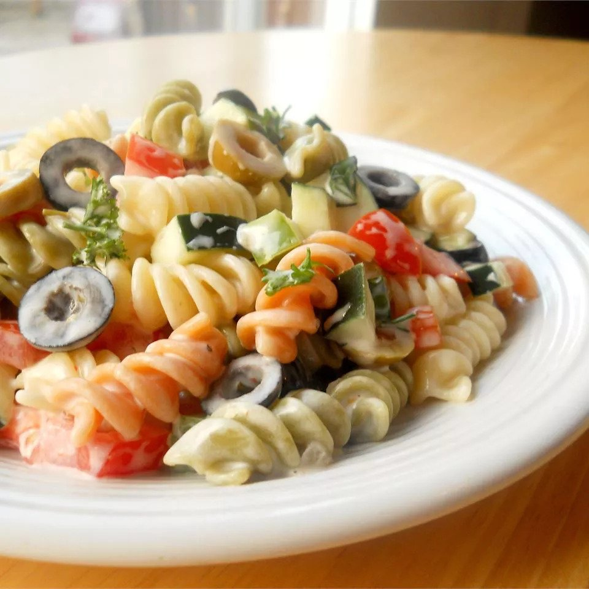

Italian Confetti Pasta Salad

Description:
This rotini pasta salad recipe with mayonnaise is so easy to make and always a hit! It is great for backyard barbecues. For best results, chill overnight.
Ingredients:
- 2 cups colored rotini pasta
- 1 cup mayonnaise
- 1 tablespoon red win vinegar
- 1 clove garlic, minced
- 1 teaspoon salt
- 1/4 teaspoon ground black pepper
- 1 1/2 tablespoons chopped fresh basil
- 1 cup chopped tomatoes
- 1/2 cup chopped yellow bell pepper
- 1/2 cup sliced black olives
Steps:
- Bring a large pot of lightly salted water to a boil; cook rotini at a boil until tender yet firm to the bite, about 8 minutes. Drain and rinse with cold water; set aside.
- Whisk together mayonnaise, vinegar, garlic, salt, and pepper in a large bowl until well blended. Mix in basil.
- Add rotini, tomatoes, bell pepper, and olives to mayonnaise mixture; fold gently until mixed. Chill in the refrigerator for 3 hours to overnight. Stir gently before serving.